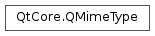

QMimeType¶
Note
This class was introduced in Qt 5.0.
Synopsis¶
Functions¶
- def
__eq__(other) - def
__ne__(other) - def
aliases() - def
allAncestors() - def
comment() - def
filterString() - def
genericIconName() - def
globPatterns() - def
iconName() - def
inherits(mimeTypeName) - def
isDefault() - def
isValid() - def
name() - def
parentMimeTypes() - def
preferredSuffix() - def
suffixes() - def
swap(other)
Detailed Description¶
The
PySide2.QtCore.QMimeTypeclass describes types of file or data, represented by a MIME type string.For instance a file named “readme.txt” has the MIME type “text/plain”. The MIME type can be determined from the file name, or from the file contents, or from both. MIME type determination can also be done on buffers of data not coming from files.
Determining the MIME type of a file can be useful to make sure your application supports it. It is also useful in file-manager-like applications or widgets, in order to display an appropriate
iconfor the file, or even the descriptivePySide2.QtCore.QMimeType.comment()in detailed views.To check if a file has the expected MIME type, you should use
PySide2.QtCore.QMimeType.inherits()rather than a simple string comparison based on thePySide2.QtCore.QMimeType.name(). This is because MIME types can inherit from each other: for instance a C source file is a specific type of plain text file, so text/x-csrc inherits text/plain.
-
class
PySide2.QtCore.QMimeType¶ -
class
PySide2.QtCore.QMimeType(other) Parameters: other – PySide2.QtCore.QMimeTypeConstructs this
PySide2.QtCore.QMimeTypeobject initialized with default property values that indicate an invalid MIME type.Constructs this
PySide2.QtCore.QMimeTypeobject as a copy ofother.
-
PySide2.QtCore.QMimeType.aliases()¶ Return type: list of strings
-
PySide2.QtCore.QMimeType.allAncestors()¶ Return type: list of strings
-
PySide2.QtCore.QMimeType.comment()¶ Return type: unicode
-
PySide2.QtCore.QMimeType.filterString()¶ Return type: unicode
-
PySide2.QtCore.QMimeType.genericIconName()¶ Return type: unicode
-
PySide2.QtCore.QMimeType.globPatterns()¶ Return type: list of strings
-
PySide2.QtCore.QMimeType.iconName()¶ Return type: unicode
-
PySide2.QtCore.QMimeType.inherits(mimeTypeName)¶ Parameters: mimeTypeName – unicode Return type: PySide2.QtCore.boolReturns
trueif this mimetype ismimeTypeName, or inheritsmimeTypeName(seePySide2.QtCore.QMimeType.parentMimeTypes()), ormimeTypeNameis an alias for this mimetype.This method has been made invokable from QML since 5.10.
-
PySide2.QtCore.QMimeType.isDefault()¶ Return type: PySide2.QtCore.bool
-
PySide2.QtCore.QMimeType.isValid()¶ Return type: PySide2.QtCore.bool
-
PySide2.QtCore.QMimeType.name()¶ Return type: unicode
-
PySide2.QtCore.QMimeType.__ne__(other)¶ Parameters: other – PySide2.QtCore.QMimeTypeReturn type: PySide2.QtCore.boolReturns
trueifotherdoes not equal thisPySide2.QtCore.QMimeTypeobject, otherwise returnsfalse.
-
PySide2.QtCore.QMimeType.__eq__(other)¶ Parameters: other – PySide2.QtCore.QMimeTypeReturn type: PySide2.QtCore.boolReturns
trueifotherequals thisPySide2.QtCore.QMimeTypeobject, otherwise returnsfalse. The name is the unique identifier for a mimetype, so two mimetypes with the same name, are equal.
-
PySide2.QtCore.QMimeType.parentMimeTypes()¶ Return type: list of strings
-
PySide2.QtCore.QMimeType.preferredSuffix()¶ Return type: unicode
-
PySide2.QtCore.QMimeType.suffixes()¶ Return type: list of strings
-
PySide2.QtCore.QMimeType.swap(other)¶ Parameters: other – PySide2.QtCore.QMimeTypeSwaps
PySide2.QtCore.QMimeTypeotherwith thisPySide2.QtCore.QMimeTypeobject.This operation is very fast and never fails.
The method helps with the implementation of assignment operators in an exception-safe way. For more information consult More C++ Idioms - Copy-and-swap.
© 2018 The Qt Company Ltd. Documentation contributions included herein are the copyrights of their respective owners. The documentation provided herein is licensed under the terms of the GNU Free Documentation License version 1.3 as published by the Free Software Foundation. Qt and respective logos are trademarks of The Qt Company Ltd. in Finland and/or other countries worldwide. All other trademarks are property of their respective owners.